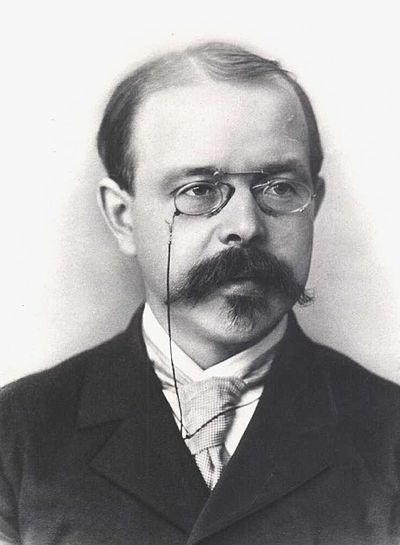
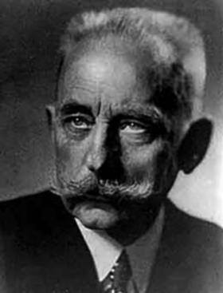

Suppressed Technology
The photochemical reaction of Hydrogen and Chlorine is a non-radioactive power source, second in power only to nuclear. The power source was suppressed at the beginning of the 19th century when Rockefeller and Standard Oil took financial control of chemistry through the Petro-Chemical monopoly of both Big Oil and Big Pharma.
In 1934, Nernst invented the word "Quantum" for the reaction because it was documented to be "One In and up to a Million Out!"
Walther Nernst - 1889
In 1918, Walther Nernst proposed that the photochemical reaction between hydrogen and chlorine is a chain reaction in order to explain what's known as the quantum yield phenomena. This means that one photon of light is responsible for the formation of as many as 1 million molecules of the product HCl. Nernst suggested that the photon dissociates a Cl2 molecule into two Cl atoms which each initiate a long chain of reaction steps forming HCl.
- Laidler K.J., Chemical Kinetics (3rd ed., Harper & Row 1987) p.288-290 ISBN 0-06-043862-2
Thus, Free Energy was documented to be very very real.
It was suppressed again, however, by the Manhattan Project during the development of the nuclear bomb as George Kistiakowsky was in charge of examining all explosions at the time. Later Kistiakowsky, traveled to Florida and met with Robert Scragg and told him that the Acedemic suppression of the Photochemical Reaction between Hydrogen and Chlorine was no longer being covered up by the government and that all the scientists were hopeful for Scragg in its development and marketing.

George Kistiakowsy
He earned his Chemistry Credentials directly under Max Bodenstein. He was in charge of explosive testing and evaluation for the Manhattan Project, which suppressed this reaction in the academic world only to later travel to meet with Scragg in person and tell him that the explosion was no longer being suppressed.
Max Bodenstein.
German physical chemist (1871–1942). First scientist to propose chemical chain reactions.
"The term NON-NUCLEAR CHAIN REACTIONS has been completely concealed from public awareness for 120 years! But we are changing that..."
- David Parker, Invetor